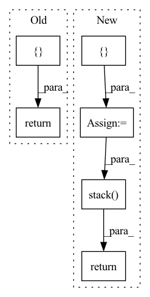

Pattern ID :2054
Before Change
)
def forward(self, input, hidden_state=None):
output = []
for step in range(input.size(1)):
// Compute current time-step
hidden_state = self.rnn_cell(input[:, step, :, :, :], hidden_state)
output.append(hidden_state)
// Stack the list of output hidden states into a tensor
output = torch.stack(output, 0)
return output
// --------------------------------------------------------------------------After Change
seq_len = len(cur_layer_input)
layer_output_list = []
last_state_list = []
for l, (gru_cell, hid_dp) in enumerate(zip(self.cell_list, self.hidden_dps)):
h = hidden_state[l]
output_inner = []
for t in range(seq_len):
h = gru_cell(input=cur_layer_input[t], h_prev=h)
output_inner.append(h)
cur_layer_input = torch.stack(output_inner) // list to array
if l != self.n_layers:
cur_layer_input = hid_dp(cur_layer_input)
last_state_list.append(h)
layer_output = torch.stack(output_inner, dim=int(self.batch_first))
last_state_list = torch.stack( last_state_list, dim=0)
return layer_output, last_state_list
def reset_parameters(self):
for c in self.cell_list:In pattern: SUPERPATTERN
Frequency: 3
Non-data size: 6
Instances Fragment ID: 7506510
Project Name: openclimatefix/skillful_nowcasting
Commit Name: 02c5ceadd01484d6ac8bce848ff76446fe7a6917
Time: 2021-10-18
Author: jacob@bieker.tech
File Name: nowcasting_gan/layers/ConvGRU.py
M Class Name: ConvGRU
N Class Name: ConvGRU
M Method Name: forward(3)
N Method Name: forward(3)
M Parent Class: nn.Module
N Parent Class: nn.Module
M File Name: nowcasting_gan/layers/ConvGRU.py
N File Name: nowcasting_gan/layers/ConvGRU.py
M Start Line: 269
M End Line: 276
N Start Line: 196
N End Line: 221
Before Change
def forward(self, x, arg_route = (True, True), **kwargs):
f_args, g_args = map(lambda route: kwargs if route else {}, arg_route)
block_kwargs = { "f_args": f_args, "g_args": g_args}
return _ReversibleFunction.apply(x, self.blocks, block_kwargs)
After Change
self.blocks = nn.ModuleList([ReversibleBlock(f=f, g=g) for f, g in blocks])
def forward(self, x, **kwargs):
x = torch.cat([ x, x = _ReversibleFunction.apply(x, blocks, args)
return torch.stack( out.chunk(2, dim=-1)) .sum(dim=0)
Fragment ID: 7506511
Project Name: lucidrains/linear-attention-transformer
Commit Name: fa23ce09a98a63d26116e3935ad5902cf705255d
Time: 2020-06-04
Author: lucidrains@gmail.com
File Name: linear_attention_transformer/reversible.py
M Class Name: ReversibleSequence
N Class Name: ReversibleSequence
M Method Name: forward(2)
N Method Name: forward(3)
M Parent Class: nn.Module
N Parent Class: nn.Module
M File Name: linear_attention_transformer/reversible.py
N File Name: linear_attention_transformer/reversible.py
M Start Line: 118
M End Line: 121
N Start Line: 161
N End Line: 174
Before Change
text_tokens: LongTensor,
encoder_state: FloatTensor
) -> LongTensor:
image_tokens: List[LongTensor] = []
attention_state = torch.zeros(self.attention_state_shape)
if torch.cuda.is_available():
attention_state = attention_state.cuda()
image_token = self.start_token
for i in range(self.sample_token_count):
probs, attention_state = self.decode_step(
text_tokens = text_tokens,
encoder_state = encoder_state,
attention_state = attention_state,
prev_token = image_token,
token_index = self.token_indices[[i]]
)
image_token = torch.multinomial(probs, 1)
image_tokens += [image_token]
return torch.cat(image_tokens)After Change
if torch.cuda.is_available(): attention_state = attention_state.cuda()
image_tokens = self.start_token[[0] * image_count]
image_tokens_sequence: list[LongTensor] = []
for i in range(self.sample_token_count):
probs, attention_state = self.decode_step(
attention_mask = attention_mask,
encoder_state = encoder_state,
attention_state = attention_state,
prev_tokens = image_tokens,
token_index = self.token_indices[[i]]
)
image_tokens = torch.multinomial(probs, 1)[:, 0]
image_tokens_sequence += [image_tokens]
return torch.stack( image_tokens_sequence) .T Fragment ID: 7506509
Project Name: kuprel/min-dalle
Commit Name: 1eb56737d8173379a240faab78ffc4605e7b1582
Time: 2022-07-02
Author: brkuprel@gmail.com
File Name: min_dalle/models/dalle_bart_decoder.py
M Class Name: DalleBartDecoder
N Class Name: DalleBartDecoder
M Method Name: forward(4)
N Method Name: forward(3)
M Parent Class: nn.Module
N Parent Class: nn.Module
M File Name: min_dalle/models/dalle_bart_decoder.py
N File Name: min_dalle/models/dalle_bart_decoder.py
M Start Line: 201
M End Line: 220
N Start Line: 193
N End Line: 226